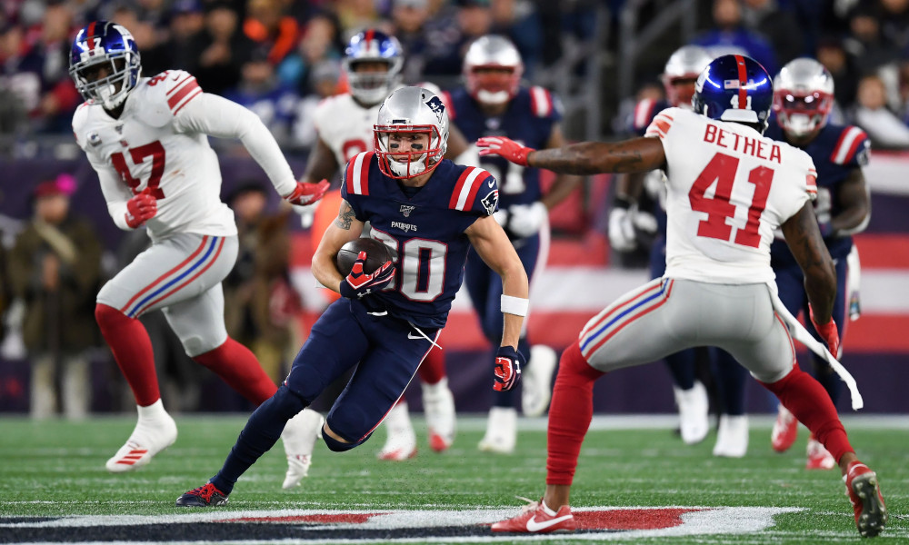
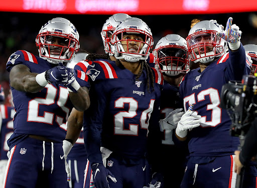

Some basic facts about the Patriots consist of:
Ever since Tom Brady and Bill Belichick began working together, the patriots have become one of the most successful teams ever. The Patriots are well known for having 16 AFC East titles as well as 18 consecutive winning seasons since 2001. Currently, they are tied with the Steelers for the most Superbowl titles(six).

